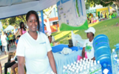
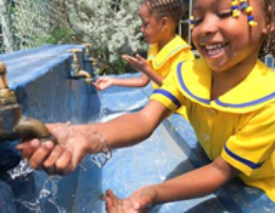

We all know that water is a natural resource but the truth is many people around the world does not have access to this precious resource
that we cannot survive without. According to USGS (United States Geological Survey), the brain and the
heart is made up of 83% of water,
the skin is made up of 64% water, lungs are about 83% of water, muscles and kidneys are made up of 79% of water,
the bones are made up of 31% of water, and most of all 90% of the body’s weight comes
from water.
Our country Jamaica is no exception. Hence this company, Splash Outreach Ministries was given birth. The aim is to source water to communities who does not have access to this precious commodity and cannot afford to purchase it
We target communities though in the different inner city and deep rural communities that might be sourcing water from rivers and streams that is untreated and become a danger to their health. Our company bottled water comes in 5 liters, 6 liters,
1.25 liters, under 600 ML bottles; we also target schools who might have to purchase water for one reason or another.
HOW CAN YOU HELP?
With your contributions through giving whether cash, cheque, or purchasing of water or water bottles or playing the games online (Recycle the bottles or Save a Drop which is found on donations) you have helped us to reach out to more and more
people worldwide.


